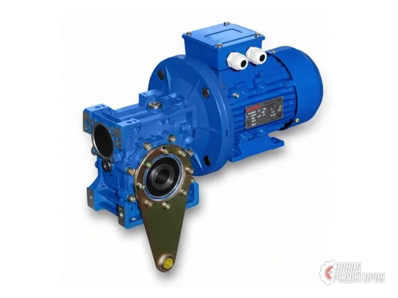
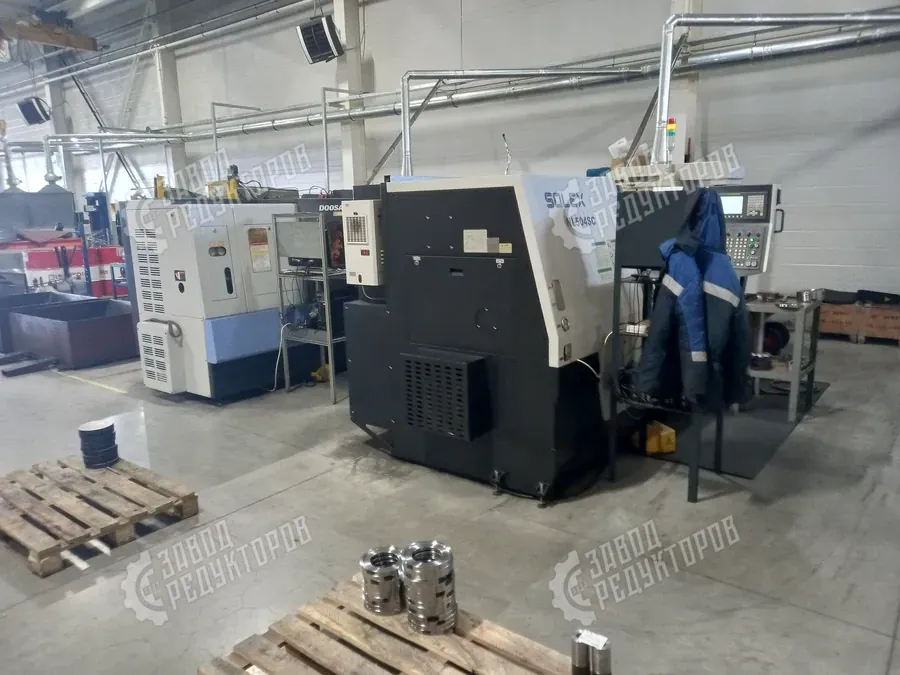

Если течёт масло из редуктора, это почти всегда симптом, а не самостоятельная поломка. Подтекает редуктор по нескольким типовым причинам: износ уплотнений, перелив масла, забитый сапун или перегрев. Игнорировать течь масла нельзя — падение уровня смазки ведёт к масляному голоданию, перегреву и задиру зубчатых колёс. Разберём, откуда берётся течь, как найти её источник и что делать по порядку.
Чтобы устранить течь, сначала нужно понять механизм её появления. На практике подтекает редуктор по одной или сразу нескольким из перечисленных причин:

Прежде чем что-то откручивать, локализуйте источник. Действуйте методично:
Когда источник течи определён, устраняйте причину, а не следствие. По убыванию частоты:

Замена сальника и прокладки — рутинное обслуживание. Но течь масла бывает признаком более серьёзного износа. Узел требует ремонта или замены, если: посадочное место сальника на валу выработано канавкой и новая манжета снова течёт; корпус имеет трещину или сквозную раковину; разбит подшипник и вал «бьёт», разбивая уплотнение; масло течёт вместе со стружкой и шумом — это уже износ зубчатой пары. В таких случаях оцените целесообразность ремонта против замены, опираясь на остаточный срок службы редуктора. Если наработка близка к ресурсу, выгоднее поставить новый узел, чем латать корпус.
Большинство течей предотвращаются обслуживанием:
Подробнее о том, какие манжеты, прокладки и кольца отвечают за герметичность, — в материале про уплотнения редуктора.
| Износ сальника | замена манжеты выходного/входного вала |
|---|---|
| Перелив масла | слить излишек до контрольной отметки |
| Забит сапун | промыть и продуть вентиляционную пробку |
| Прокладка разъёма | заменить прокладку, протянуть крепёж |
| Трещина корпуса | ремонт литья или замена узла |
| Перегрев | снять причину нагрева, заменить масло и уплотнения |
Если подтекает редуктор — не доливайте масло «вслепую», а найдите источник: вал, разъём или сапун. Начните с дешёвого (сапун и уровень), затем переходите к замене сальника и прокладки. При выработке посадки или трещине корпуса решайте вопрос ремонта или замены узла. Не уверены в диагнозе — пришлите фото шильдика и места течи, инженер Завода Редукторов определит причину и поможет с уплотнениями или подбором замены через подбор редуктора.
Отдельно стоит сказать про скорость реакции. Запотевание корпуса и редкие капли — это ранняя стадия, когда течь масла из редуктора устраняется заменой одной манжеты и стоит копейки. Но если оставить редуктор подтекать «до планового ТО», уровень смазки уходит незаметно, подшипники начинают работать на масляном голодании, растёт нагрев — и дешёвый ремонт сальника превращается в замену вала, подшипников или целого узла. Поэтому свежее пятно под валом лучше отрабатывать сразу: протереть, прогнать привод под нагрузкой и точно локализовать место течи.
Имеет значение и культура сборки. Часто масло течёт из редуктора не из-за «плохого» сальника, а из-за установки манжеты без смазки кромки, перекоса при запрессовке, повторного использования задубевшей прокладки или неравномерной протяжки болтов крышки. Поэтому при ревизии уплотнения меняют комплектом, посадочные плоскости обезжиривают, а крепёж затягивают крест-накрест с паспортным моментом. Такой подход убирает не симптом, а саму причину, по которой подтекает редуктор, и заметно продлевает межремонтный интервал.
| Место течи | Вероятная причина | Решение |
|---|---|---|
| Потёк по выходному валу | износ или задубевание сальника | заменить манжету, смазать кромку при монтаже |
| Масло по линии разъёма корпуса | задубевшая прокладка, ослабленный крепёж | заменить прокладку, протянуть болты крест-накрест |
| Подтёк из-под сапуна сверху | перелив масла или забитый сапун | слить излишек до отметки, промыть и продуть сапун |
| Капли по телу корпуса | трещина или раковина в литье | ремонт литья либо замена корпуса/узла |
| Течь у входного вала со стороны двигателя | износ манжеты, биение вала из-за подшипника | заменить сальник, проверить и заменить подшипник |
| Течь усиливается при нагреве | перегрев, рост давления в картере | снять причину нагрева, заменить масло и уплотнения |
Когда течёт масло из редуктора, важно не путать симптом с причиной: течёт масло из редуктора чаще всего из-за изношенного сальника, перелива или забитого сапуна, реже — из-за трещины корпуса. Если у вас течёт масло из редуктора по выходному валу, начните с дешёвой диагностики — протрите узел, проверьте уровень и сапун, и только потом меняйте манжету или прокладку. Грамотно устранённая течь масла из редуктора возвращает узлу герметичность и продлевает срок службы привода.
Какие манжеты, прокладки и кольца отвечают за герметичность — в материале про уплотнения редуктора. Если течь оказалась следствием износа и узел пора менять, подобрать замену поможет подбор редуктора.
Сальник (манжета) стоит на выходном или входном валу, поэтому потёки идут от места выхода вала и часто разбрасываются по корпусу при вращении. Течь по прокладке проявляется ровной полосой строго по линии разъёма половин корпуса. Протрите узел насухо, дайте редуктору поработать и посмотрите, откуда появляется свежее масло.
Долив маскирует проблему, но не убирает её: течь продолжится, а уровень снова упадёт. При сильной утечке вы рискуете недосмотреть момент масляного голодания и угробить подшипники и зубчатые пары. Правильнее найти источник течи и устранить его, а доливом пользоваться только как временной мерой до ремонта.
Чаще всего виноват перелив: излишек масла вспенивается и выходит через вентиляционную пробку. Вторая причина — забитый или неисправный сапун, из-за которого внутри растёт давление и продавливает уплотнения. Проверьте уровень по контрольной отметке и промойте сапун — нередко этого достаточно.
Небольшая течь допускает кратковременную работу, но это всегда риск: уровень масла падает, растёт нагрев и износ. Запотевание и редкие капли можно терпеть до планового обслуживания, а вот струйку или лужу под редуктором игнорировать нельзя. Чем дольше тянуть, тем выше шанс перейти от замены сальника за копейки к ремонту корпуса или замене узла.
Небольшие трещины чугунного литья иногда заваривают или заделывают холодной сваркой, но это не всегда надёжно при вибрации и нагреве. Если трещина в нагруженной зоне или повреждены посадочные места, разумнее заменить корпус или узел целиком. Пришлите фото шильдика и места повреждения — инженер подскажет, что ремонтопригодно, а что проще заменить.
В нормальном режиме уровень контролируют при каждом ТО, а на нагруженных приводах — раз в смену по контрольной пробке или щупу. Масло меняют по регламенту производителя или при потемнении, запахе гари и появлении эмульсии. Регулярный осмотр уплотнений и сапуна помогает поймать течь на ранней стадии, пока она дешёвая в устранении.
Пришлите модель, шильд или фото места течи — определим причину и пришлём решение в течение 15 минут.
Оставить заявку